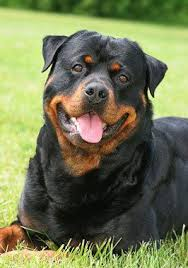
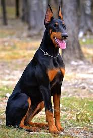

Pitbulls are the most common breed of dog to be frowned upon.
In over 937 cities there are strict laws that ban this specific breed of dog based off of stigmas.
The main problem is the fact that these dogs are sometimes raised to be fighting dogs for the entertainment of others.
These fighting dogs often times end up in shelters after having been abused and abandoned once they have served what the owner has felt their purpose was.
These certain situations should not define the breed as a whole.
Most pitbulls are the friendliest dogs that people could ever come in contact with.
For example, if raised in a loving home, pitbulls are actually extremely loyal, protective, and affectionate to their owners and visitors.
They are especially sweet to babies and young children and make some of the best babysitters.
Human contact can even make a pitbull feel relaxed and safe!
Rottweilers are portrayed as violent and aggresive dogs in the media.
Due to these misconceptions, their big size intimidates people.
In reality, they are perfect dogs for families, even those with small children.
They are attentive towards their owners and are extremely loyal and intelligent.
Through training and discipline, they will learn to respect your children and will fiercely protect their owners if an intruder ever breaks in.

Doberman Pinschers:
Dobermans are seen as violent as well due to how they are shown in media and other outlets.
This breed will only attack when it feels threatened, which goes for almost any breed of dog.
There is no reason to be afraid because if you will spend time with your dog and allow it to socialize with others, Dobermans are the perfect dog.
By introducing them to others, they will become some of the most friendly, loving, and loyal dogs.
Dobermans will grow to love and protect your children and are extremely observant, so they can anticipate danger and threats.
They are also an extremely athletic and intelligent breed and will accompany you on hikes and morning runs.

In the end, these three breeds of dogs are just misunderstood and deserve love and care, just like all other breeds of dogs do.